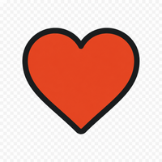
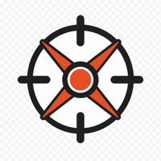
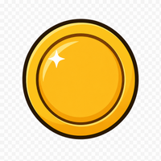
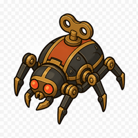
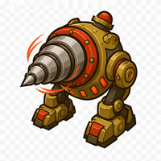
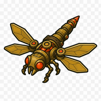
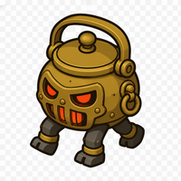

Denná dielňa
Mosadzná légia
Hodinárove hračky pochodujú na tvoj bastión. Postav veže, nechaj pružiny dobehnúť a ubráň dielňu.

20/20

150
Cvakáč×6
Vrtiak×3
Mosadzná vážka×2
Kotlár×1Rozohratá hra sa neuloží.
Hodinár naťahuje ťažšie súkolie...